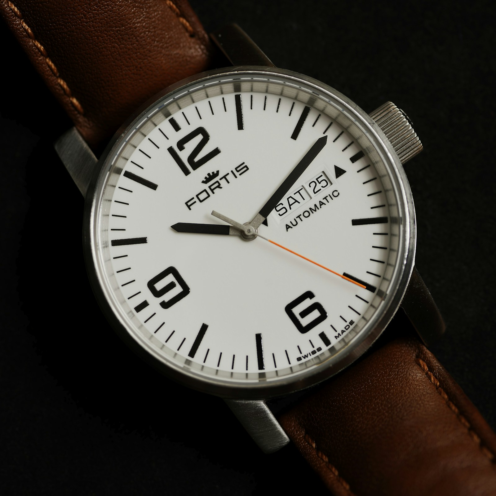
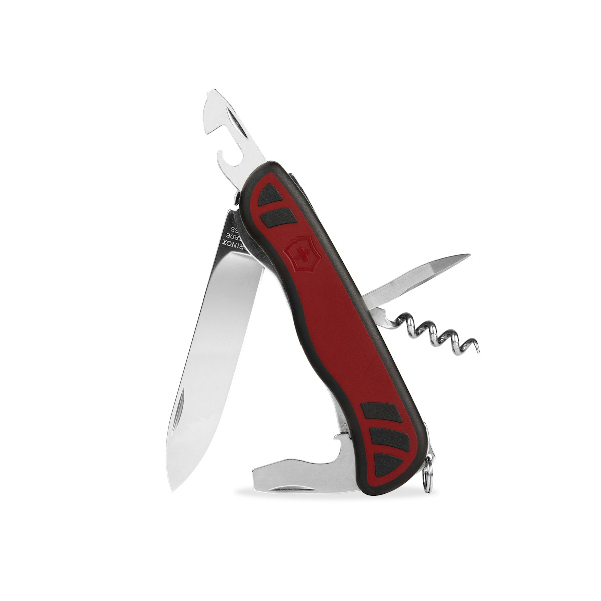

Shopping Guide
Chapter 11
Shopping Guide
Overview
Switzerland is a shopper's paradise, offering everything from luxury Swiss watches and chocolates to traditional souvenirs and high-end fashion.
Swiss Watches

Swiss watches are renowned worldwide for their precision and craftsmanship | Image: Unsplash (Fidel Fernando)
| Brand | Price Range (CHF) | Best For |
|---|---|---|
| Rolex | 5,000 - 50,000+ | Luxury investment pieces |
| Omega | 3,000 - 30,000+ | Premium Swiss watches |
| Tag Heuer | 1,500 - 15,000 | Sporty luxury |
| Swatch | 50 - 500 | Affordable trendy watches |
| Longines | 1,000 - 10,000 | Elegant classics |
Swiss Chocolates
No trip to Switzerland is complete without tasting and buying Swiss chocolate. Top brands include Lindt, Laderach, Sprungli, Suchard, Cailler, and Toblerone. Chocolate is cheaper at supermarkets (Migros, Coop) than souvenir shops.
Souvenirs to Buy
- Swiss Army Knives: Victorinox or Wenger - from CHF 20
- Swiss Cheese: Emmental, Gruyere, Raclette
- Matterhorn Figurines: Wooden or ceramic - from CHF 10
- Fondue Sets: Complete sets for home - from CHF 40
- Music Boxes: Handcrafted Swiss music boxes - from CHF 30

The iconic Swiss Army Knife - a practical souvenir | Image: Unsplash (Mahbod Akhzami)
Tax Refund Process
As a non-EU resident, you can claim a tax refund on purchases above CHF 300 in a single store. Ask for a Tax Free Form, get it stamped by Swiss Customs when leaving, and submit at the refund counter at Zurich, Geneva, or Basel airports. Refund is typically 7.7% of the purchase price.
Shopping Tips
- Carry your passport for tax-free shopping forms.
- Compare watch prices - some models may be cheaper in duty-free shops.
- Swiss Army Knives must go in checked luggage.
- Sunday stores are closed - plan your shopping accordingly.
- Many stores in tourist areas accept Euros, but change is given in CHF.
Bahnhofstrasse in Zurich - one of the world's premier shopping streets | Image: Unsplash (Tomek Baginski)